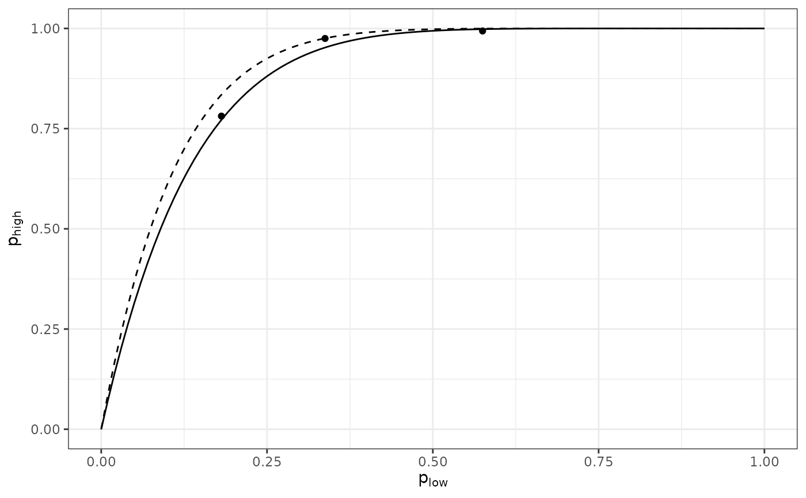

TODO
spatial_hier(low, high)
| low | An list of |
|---|---|
| high | An list of |
The manner in which the data are collected provides information about aggregation of disease at different levels in a spatial hierarchy (Hughes et al. 1997). For example, a sampling unit (upper level) can be reported as "healthy", if no diseased leaves (lower level) were found within the sampling unit.
In a pairwise comparison between levels, the probability that an individual at the lower hierarchical level is diseased is denoted plow, and phigh refers to the probability of disease at the higher level. The relationship between these two probabilities can be written as
phigh = 1 - (1 - plow)^nu
where n is a parameter ranging from 0 to the corresponding number of individuals at the hierarchical level referenced by plow. If the value of n is equal to the number of individuals at the lower hierarchical level contained in a unit of the higher level (n low ), this suggests that there is no aggregation of disease incidence at the lower level. Conversely, a value of n less than n low is indicative of aggregation at that level. The value of n can be interpreted as an effective sample size (Hughes and Gottwald 1999; Madden and Hughes 1999) in the statistical sense that its value indicates the number of independent pieces of information at the lower level. Here, the effective sample size concerns the equating of the zero-term of the binomial distribution with the zero-term of an overdispersed distribution, as described in Madden and Hughes (1999). Using the complementary log-log transformation, CLL(x) = ln(-ln(1-x)), one can rewrite the Equation 5 as follows (Madden et al. 2007):
CLL(phigh) = ln(nu) + CLL(plow)
from which the value of ln(n) can be obtained as the intercept of a linear regression when the slope is constrained to 1.
my_data_low <- incidence(tomato_tswv$field_1928) # TODO: 2 bugs to correct here (before) # my_data_low <- split(my_data_low, by = "t")[[1]] # my_data_high <- clump(my_data_low, unit_size = c(x = 3, y = 3)) my_data_low <- incidence(tomato_tswv$field_1929) my_data_low <- clump(my_data_low, c(x = 3, y = 3)) my_data_high <- my_data_low my_data_high$data$n <- 1 my_data_high$data$i <- ifelse(my_data_high$data$i > 0, 1, 0) my_data_low <- split(my_data_low, by = "t") my_data_high <- split(my_data_high, by = "t") res <- spatial_hier(my_data_low, my_data_high)#> Warning: Only 3 cloglog data points were used to perform the regression.res#> Spatial hierarchy analysis for 'incidence' data. #> #> Parameter estimate: #> Estimate Std. Error #> log_nu 2.000362 0.1198758 #> nu 7.391731 0.8860894summary(res)#> #> Call: #> spatial_hier(low = my_data_low, high = my_data_high) #> #> Residuals: #> 1 2 3 #> 0.02779 0.19234 -0.22013 #> #> Coefficients: #> Estimate Std. Error t value Pr(>|t|) #> log_nu 2.0004 0.1199 16.687 0.00357 ** #> nu 7.3917 0.8861 8.342 0.01407 * #> --- #> Signif. codes: 0 ‘***’ 0.001 ‘**’ 0.01 ‘*’ 0.05 ‘.’ 0.1 ‘ ’ 1 #> #> Residual standard error: 0.2076 on 2 degrees of freedom #>plot(res)